写智能算法，到底是用java还是C++好？
程序猿的内心独白 2019-03-31 06:39:12
无论是七、八年前开始写的 “算法博客”，还是三年前出版的图书《算法的乐趣》，亦或是畅销课《算法应该怎么“玩”？》，我介绍算法用的例子都是用 C++ 编写的。
尽管以前博客的留言里不乏抱怨之声，但是在《算法的乐趣》出版的时候我仍然 “一意孤行” ，最终招致读者吐槽：“好好的一本算法书，为什么要用 C++？”
我的很多使用 Java 的朋友们也都为我 “打抱不平”，但是在事实面前，我不得不承认，这个拖了很久的需求必须要实现了。
尽管学习 Java 了很长时间，但是因为工作的需要，很少用 Java 做过大型的项目，所以在公开算法实现的时候，我本能地选择最擅长的 C++ 语言。
事实上，我在编写《算法应该怎么“玩”？》的过程中，参考资料里有不少 Java、Python 实现的算法，原理都是相通的，用何种编程语言实现只是对外展示的一张皮而已。
作为一个 Java 程序员时，经常会遇到 C++ 算法代码，有时候没有更好的替代例子的情况下，还必须得啃一啃 C++。
往好处想，虽然 C++ 涉及的内容广泛，但是算法上能用到的部分并不多，都是一些基本语言元素，短时间内了解一下 C++ 相关的内容，能够看懂小段的 C++ 代码是完全有可能的。
接下来，我会在算法涉及的层面上，比较一下 C++ 和 Java 上的差异，通过这些对比和比较，Java 程序员能快速理解 C++ 算法实现的例子，C++ 程序员也能看懂简单的 Java 算法代码。
PS：
两种语言的对比会放在一起展示，如不做特殊说明，上面的代码是 C++ 的实现方式，下面的是 Java 的实现方式。
此外，C++ 语法层面使用的版本是 C++11之后的版本，Java 使用的标准是 Java6 之后的版本。
C++ 和 Java 语法特性的相似性
因为历史原因，同为 C 语言家族的 Java 和 C++ 语言层面的相似性是有客观基础的。
我通常是这样理解的：Java 是跨平台的 C++，是一种更好的 C++（是不是有点拉仇恨的感觉）。
基本数据类型
C++ 的基本数据类型有：int、unsigned int、long、unsigned long、short、unsigned short、char、unsigned char、bool、float 和 double；
相应的，Java 也有 8 种基本数据类型，分别是：byte、short、int、long、float、double、char 和 boolean。
大部分情况下，两种语言的基本数据类型可以根据下表进行一对一的转换，但是也有差异，需要特别注意。
首先是 char，C++ 的 char 是 8 比特无符号整数，顺便表示了 ASCII 字符；Java 的 char 是 16 比特，天生就可以表示宽字符集的字符。
另一个需要注意的是 long 类型，C++ 的 long 是不可移植类型，在不同的系统上其长度不一样，可能是 32 位，也可能是 64 位，所以 C++ 程序员应尽量避免使用 long。
Java 的 long 比较单纯，无论是 32 位的系统还是 64 位的系统，它都表示 64 位整数。
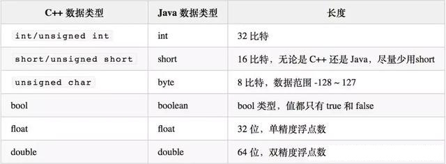
反过来，Java 会用 d 或 D 表示一个直接数字是 double 类型的浮点数，比如 200.0d 或（200.0D），但是 C++ 不支持，因为 C++ 默认一个浮点型的直接数字就是 double 类型。
C++ 用字面量符号 f 或 F 表示一个直接数字是 float 类型浮点数，比如 250.1 f（或 250.1F），这一点 Java 也是一样的。
C++ 用字面量符号 l 或 L 表示 long，用 UL 表示 unsigned long。
字符串
很多 C++ 程序员喜欢的用 char* 或 char 类型的数组存储字符串，这其实是 C 语言用户带过来的习惯，我给出的 C++ 算法实现对字符串一般都用std::string，对应 Java 的 String。
std::string和String的用法对照如下表所示：
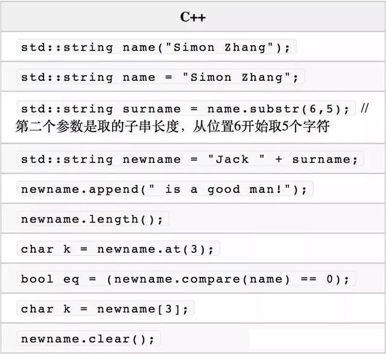
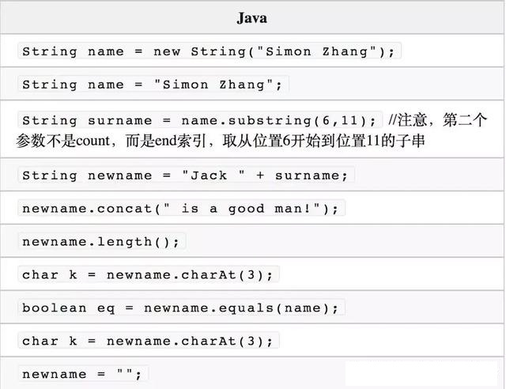
基本语法
虽然 Java 的语法和 C++ 十分地相似，但是语言层面还有一些不同。C++ 允许全局函数的存在，但是 Java 不允许，不过 Java 也留了个口子，就是用静态成员函数。
Java 没有指针，对象的传递和返回都是用的引用的方式，并且不需要像 C++ 那样用 “&” 做特殊的语法标记。
大多数介绍 Java 的书籍开篇就是类和抽象，然后才是基本的语法，这和 Java 上等人的气质是一致的，连这都不会，咋做程序员？C++ 应该多提升一下气质，少用点指针和全局函数。
不过本文是为了对比 C++ 和 Java 的相似性，所以就从基本语法结构开始介绍。
运算符和赋值
二者的运算符几乎一样，甚至 “++” 和 “—” 运算符都一样有前缀式和后缀式两种形式，意义也一样；运算符的优先级规则也是一样的。
赋值语句两者基本上是一样的，看看每一行结尾的 “;” 你就知道它们有多相似。
条件判断与循环
条件判断方面，C++ 与 Java 的 if 语句、switch 语句用法都相同；逻辑表达式的结构和语法、逻辑运算符的优先级也都相同。
C++ 的三种基本循环方式是 while 循环、do…while 循环和 for 循环，Java 都支持，甚至连关键字和 break、continue 控制语句的意义也一样。
C++11 版本引入了一种根据范围循环的语法，一般理解和 Java 的增强 for 循环类似，比如这种 C++ 循环形式：
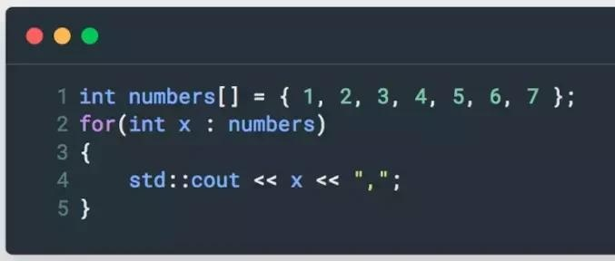
Java 与之对应的形式是：
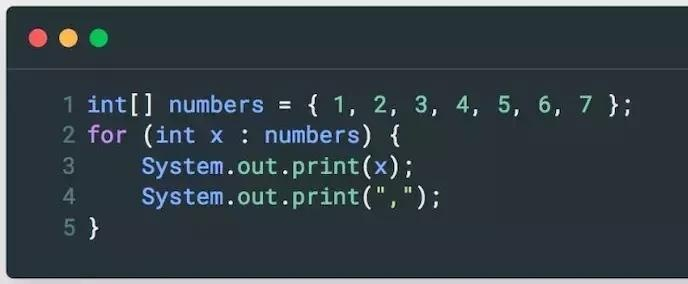
C++ 的基于范围的 for 循环也可用于 C++ 的标准库对象，用于取代老旧的迭代器循环方式：
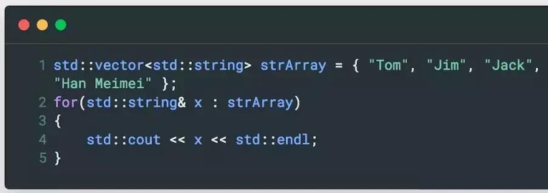
同样，Java 的增强 for 循环也支持基于 Collection 的遍历，理解起来不成问题：
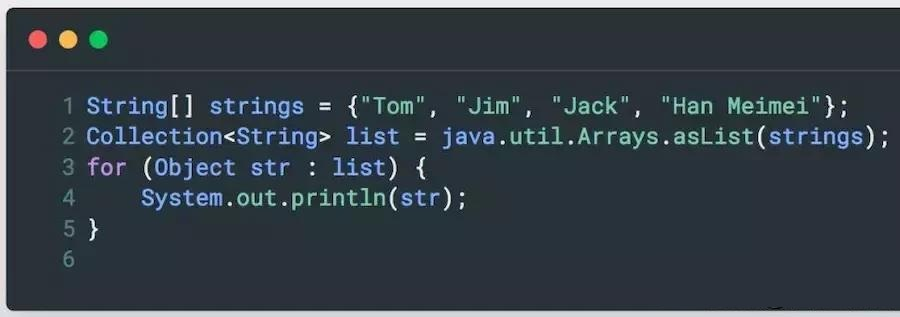
传统的 C++ 语言是用迭代器对标准库的容器进行遍历，比如：
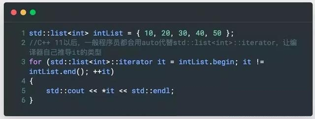
C++ 的容器都有begin()和end()接口，分别得到起始位置的迭代器的值和结束位置的迭代器的值，很多标准库的算法都会用到迭代器。
C++ 用当前迭代器的值是否等于end()代表的结束位置迭代器的值来判断是否遍历结束。
Java 的 Collection 也有迭代器的机制，Java 用hasNext()判断是否遍历结束。
C++ 直接用 “ * ” 提领迭代器，得到对象本身的引用，Java 用迭代器的next()接口得到对象本身的引用。以上 C++ 代码可以翻译成如下 Java 代码：
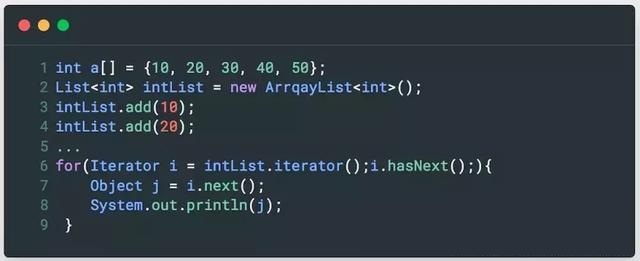
除了以上的 for 循环语句，C++ 还支持for_each()形式的遍历 + 处理操作，也是配合迭代器使用，for_each()的前两个参数是一对迭代器，代表循环的起始位置和结束位置。
第三个参数是一个可调用对象，即函数对象（C++11 版本之后，这个参数还可以是一个 Lambda 表达式），举个栗子：
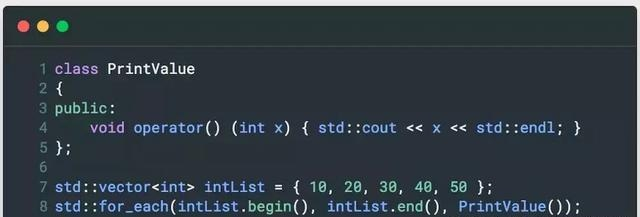
Java 没有与之对应的泛型函数接口，但是 Java 的很多 Collection 都支持forEach()接口：
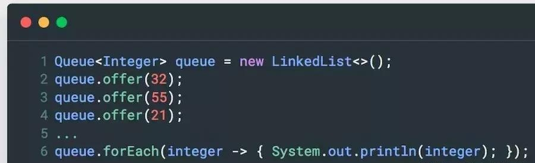
C++ 的for_each()其实用起来并不好用，自从 C++11 之后，除了怀旧派 C++ 程序员，其他人应该很少会再用for_each()了，基于范围的 for 循环简直丝滑的不要不要的。
函数
C++ 的函数结构和 Java 也一样，函数调用的形参和实参对应方式也一样，也无需多做说明。
数组
C++ 和 Java 都支持原生数组，并且数组索引都是从 0 开始。
C++ 中定义数组的同时就分配了存储空间，所以在定义时要指定长度，使用 new 动态申请内存时，要指定长度。
但是一种情况除外，那就是静态初始化数组的形式，因为此时编译器知道需要多少空间存储这些数据，如下是 C++ 定义数组的常用形式：
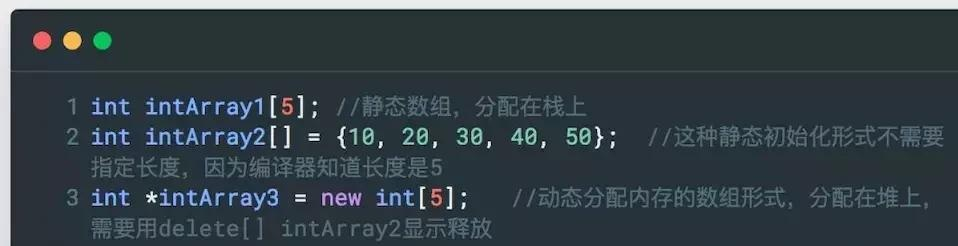
Java 如果仅仅是声明一个数组，可以不指定长度，因为此时并不分配存储空间，需要分配空间的时候，用 new。与之对应的 Java 语言的形式是：
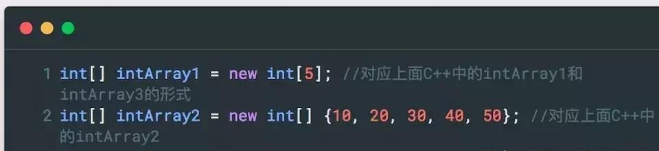
C++ 中二维数组的每一维长度必须相同，因为 C++ 的二维数组实际上只是一块连续的存储空间而已，甚至可以用一维数组的下标遍历全部二维数组的存储空间。
Java 没这要求，因为 Java 的每一维都是可以单独申请存储空间的。但是二者在使用形式上是一样的。C++ 定义和初始化二维数组一般有这几种形式：
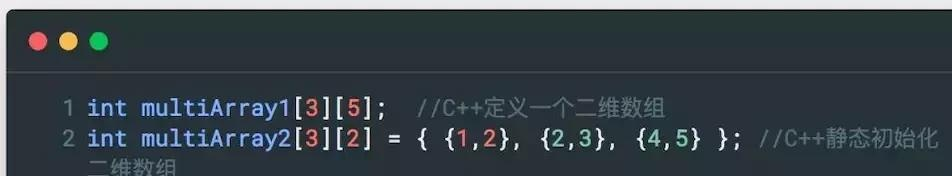
与之对应的 Java 语言初始化二维数组的形式是：
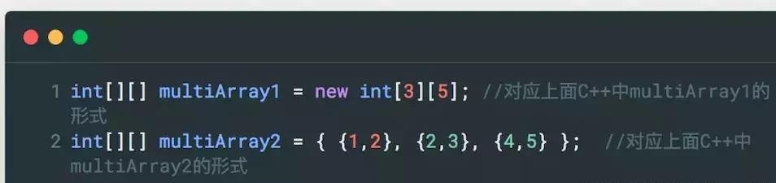
C++ 也支持动态内存形式的二维数组，一般有两种使用方法，Java 都有与之对应的习惯用法：
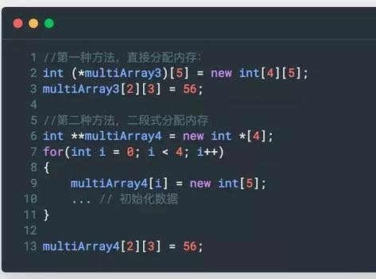
与之对应的 Java 的方法是：
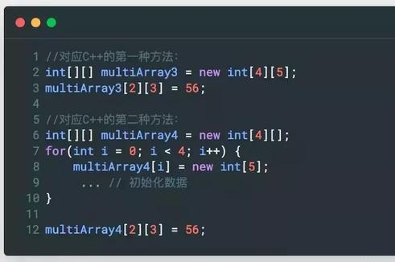
这代码相似度很高。C++ 代码最后要用delete[]手动释放为数组申请的内存，Java 是不需要的。
C++ 还可以利用二维数组在内存中是连续存储这一特性，使用时用下标计算将一维数组当成二维数组使用，计算的方法是：a[i][j] = b[i * 2 + j]，如下代码示例：
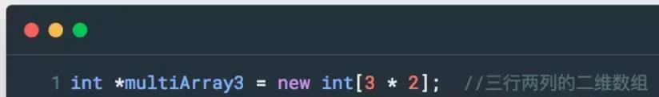
遇到这样的代码，需要根据上述对应关系，小心地理解算法代码的意图。一些棋盘类游戏通常喜欢用一维数组存储二维的逻辑棋盘结构，好在 Java 也可以这么做，转换起来也没什么难度。
枚举
与 C 相比，C++ 强化了类型差异，枚举变量和整数变量之间不能互相赋值，但是使用方法依然是直接使用枚举值，没有限制域。
C++11 之后，开始支持强类型枚举，这一点就和 Java 很像了，越来越像一家人了：
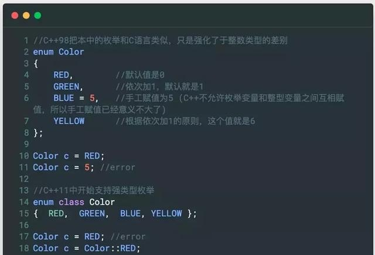
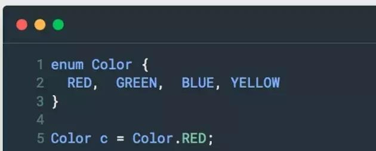
I/O 系统
C++ 代码中一般用std::cin和std::cout进行控制台的输入和输出。
也有一些半吊子 C++ 程序员会在 C++ 代码中混用 C 语言的printf()打印输出信息。
不过话说回来，很多语言都支持 printf 方式的格式化输出，比如 Java、 Python，为啥 C++ 就不能提供一个呢？比如以下代码接受用户输入一个字符串和一个整数，并将其输出出来：
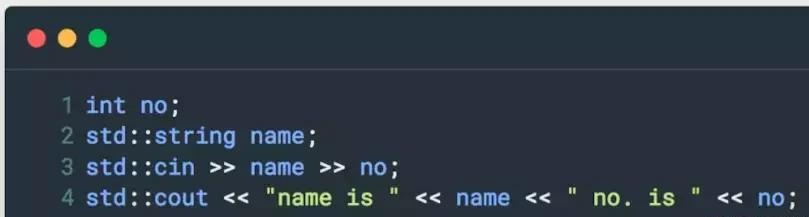
将其翻译成 Java，是这个样子的：
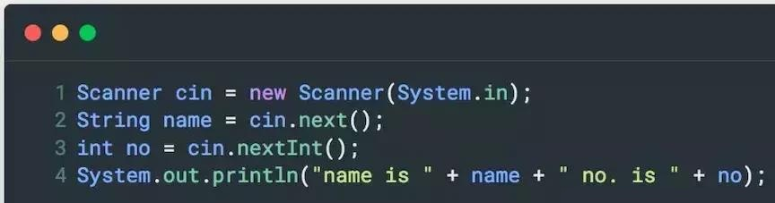
上述代码示例中，C++ 和 Java 的输入分隔符都是空格或回车，如果希望输入带空格的一整行内容怎么办？
C++ 提供了getline()函数，getline()会从缓冲区中取输入流，直到遇到结束符。
结束符默认是' '，实际上是getline()函数有三个参数，第三个参数可指定结束符：
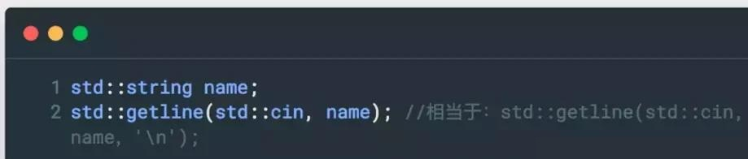
Java 也有与之对应的 Buffer IO 方式，请看：
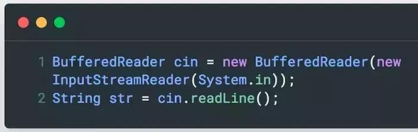
C++ 程序员有时候也会用std::cin::get()函数，这个函数也是从缓冲区中读入一行，直到遇到结束符，和getline()函数一样，这个函数也可以指定结束符，如果不指定，默认是' '。
但是std::cin::get()函数有个小个性，就是它不从缓冲区中读出结束符，而是将结束符留在缓冲区中。
为了适应它的这个小个性，C++ 程序员通常会在后面跟一个 get，将结束符读出并丢弃掉，所以代码看起来有点怪怪的：
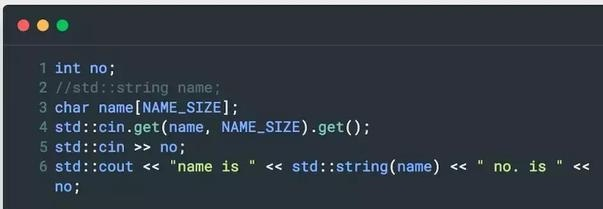
理解了这一点，看懂 C++ 代码也就不难了。当然，无论是 C++ 还是 Java，其 I/O 系统都非常复杂，有流式 I/O，也有缓冲区 I/O，操作的数据可以是控制台 I/O，也可以是文件 I/O。
类和封装
首先说说 C++ 的 struct，Java 没有与之对应的相似物的，但是完全可以用 class 来替换这个概念。为什么这么说呢？
因为在 C++ 中，struct 的位置有点尴尬，它是个 POD 吧，但它的成员又可以用非 POD 的数据类型，比如std::string，甚至还可以定义虚接口，一旦有了这些东西，它就算不上 POD 了，除了成员默认是公有之外，和 class 没有太大差别。
在我看来，C++ 保留 struct 的主要意义是为了兼容旧的 C 或 C++ 的库，这些库中很多接口用到了 struct，其次是纯粹作为一种 POD 的 value type 来使用。
我的算法代码中也会用到 struct，大概是为了怀旧吧，其实完全可以用 class 代替，当然也可以很容易地翻译成 Java 的 class。来看个例子，对于这个 struct：
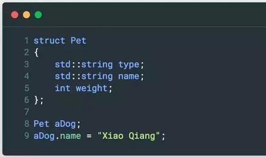
可以很轻松的转成 class：
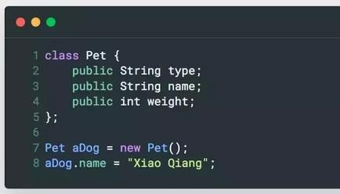
自从 C++11 发布以后，我就觉得 C++ 和 Java 的 class 越来越像了，分开这么多年后，C++ 终于也支持 final 和 override 了。
从语法层面看，二者的差异很小，就小规模的算法而言，也很少会用到继承和重载之类的情况，所以，Java 程序员看懂 C++ 的 class 定义与实现一点都不难。
少有的一些差异，比如 C++ 的函数可以设置参数默认值，或者 C++ 的抽象机制采用的虚函数要使用 virtual 关键字等。先看一个典型的 C++ 类的定义与实现：
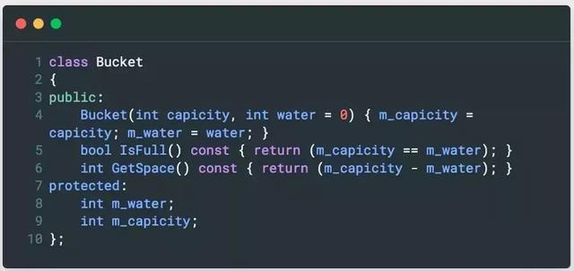
C++ 的类成员访问控制采用分节控制，用public:或protected:作为分节的标志，如果没有分节标志的类成员，则是默认的private:控制。
C++ 的成员函数可以有默认值，并且构造函数也支持默认值。以 Bucket 类为例，构造函数第二个参数默认值是 0，即在构造 Bucket 对象时，可以只确定一个参数 capicity，也可以在确定 capicity 参数的同时，确定 Bucket 的水量，比如：
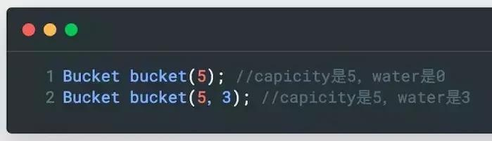
Java 不支持参数默认值，但是可以通过重载函数解决这个问题，即增加一个只有 capicity 参数的构造函数：
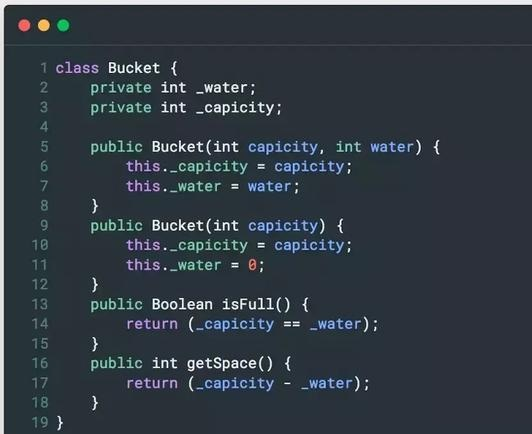
C++ 没有抽象基类的语法，但是又抽象基类的概念，一般当一个类中有一个纯虚函数的时候，这个类是不能被直接实例化的，它就类似于是一个抽象基类，比如：
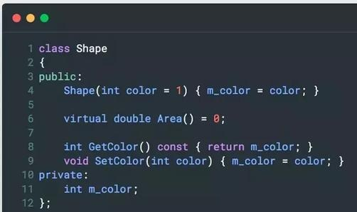
C++ 的函数有很多类型修饰，比如常见的 const，C++11 后新增了 final 和 override，但是 = 0 一直是一个比较奇怪的存在，它表明这个函数没有实现，需要在派生类中实现，同时，也说明这个类是不能被实例化的。
对于这样的机制，Java 可以理解为这就是个抽象基类：
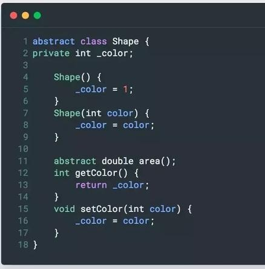
C++ 的继承体系的语法与 Java 类似，只是语法形式上不同，Java 采用关键字：extends。
C++ 对于基类声明的虚函数，继承类中不需要再用 virtual 关键字修饰，当然，加了 virtual 关键字也没错误。Java 也一样，abstract 关键字再继承类中可以省去。
从 Shape 抽象类派生一个 Circle 类，C++ 的典型代码是：
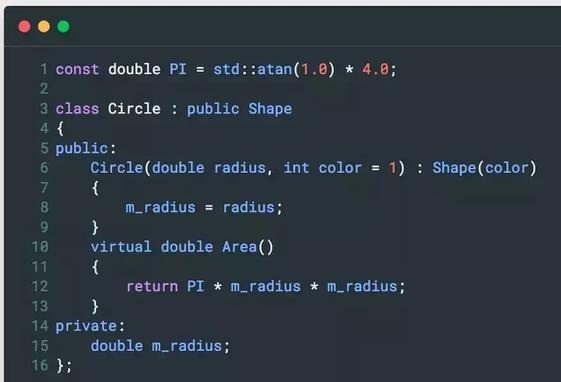
Circle 构造函数后面的 :Shape(color)，表示对基类的初始化，对于 Java 语言来说，相当于调用super(color)。
以上代码翻译成 Java 语言，应该是这样的形式：
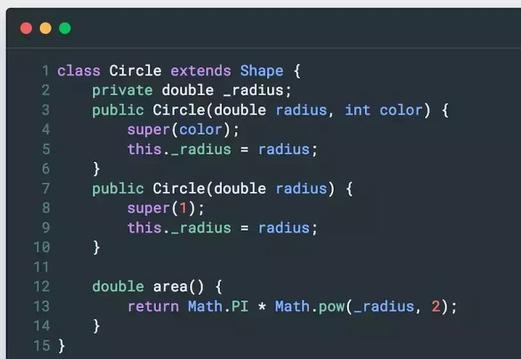
C++ 有时候也会将一个类声明为 final，意味着它不希望被其他类继承，从语法上做了限制，比如：
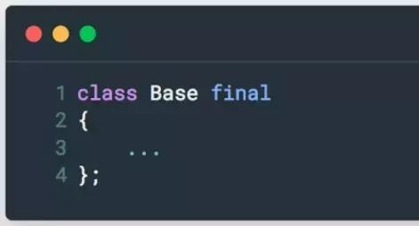
有时候，是某个不希望被派生类重载，比如：
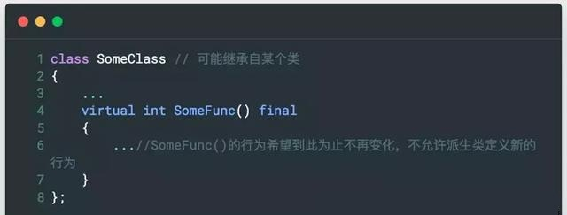
这些对于 Java 程序员来说，并不陌生，语法上只是 final 关键字的位置不同，理解上应该不存在任何问题。
总结
本文介绍了 C++ 和 Java 在基本语法层面的对应关系，因为算法代码涉及的语言方面深度有限，所以本文介绍的内容也比较基础。